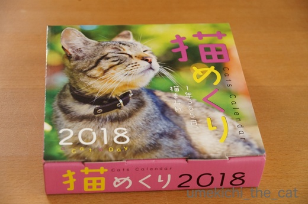
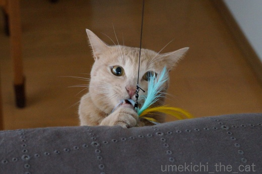
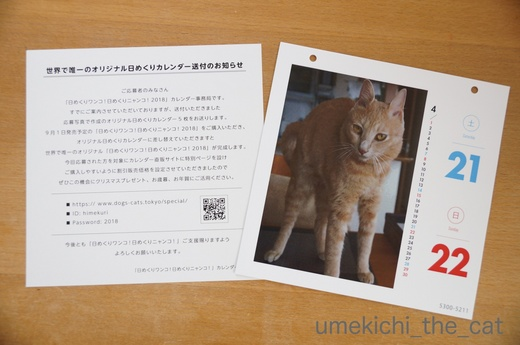
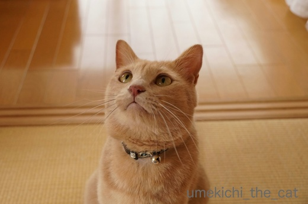
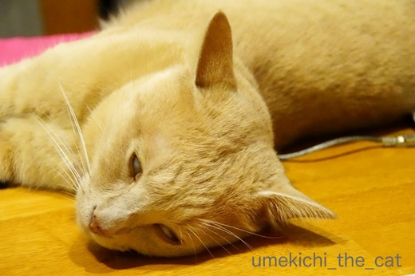
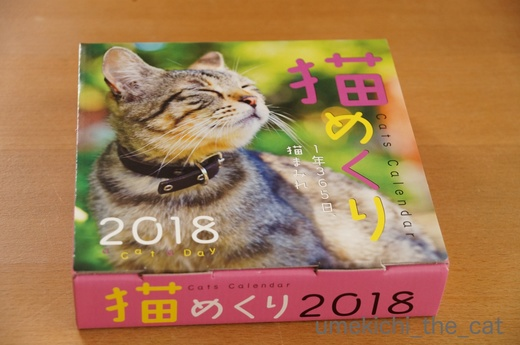
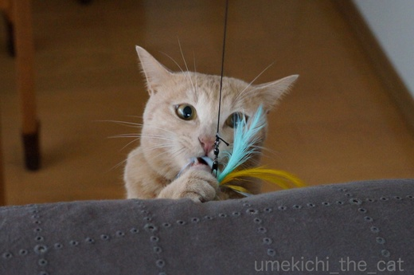
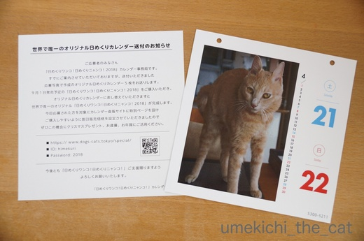
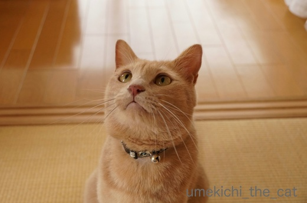
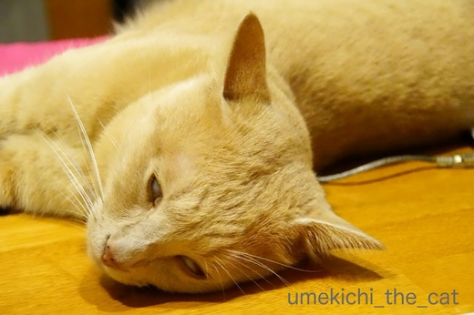

カレンダーがやって来ました [梅吉]
先日採用連絡があった「猫めくり」手元に届きました。

ちっ、梅吉が表紙じゃないんかい・・・・・
じゃ〜〜〜ん！
「梅吉くんは何月何日に採用されました」などの説明が一切ないので１月１日から必死にめくりました。
手が疲れて来たな・・・と思った頃にありました！
梅吉、３月13日を飾っています(๑˃̵ᴗ˂̵)و
採用されたのはなんと

この寄り目写真でした。
もしかしたら他の２枚も採用されてるんじゃ・・・・と淡い期待を抱いて12月31日までめくります。
残念！やっぱり採用は一枚だけでした。
指がつりそうになっちゃたわww
ちっ、全部採用じゃないんかい・・・・・
このカレンダーとほぼ同時に届いたぺろんと一枚もののカレンダー。

じつは日めくりニャンコにも応募していたのでした^^;
不採用になりましたが、応募した写真を希望の日付で作ってくれたのです。
本体のカレンダーと差し替えるとオリジナルカレンダーが出来ますよ、との事。
なかなか嬉しい心遣いです＾＾
本体、買わないけどねっ！！
「猫めくり」の写真、どのニャンコも可愛くてクオリティの高い写真ばかりでしたよー。
梅吉の不採用になった写真と同じようなテーマ、構図の写真が採用されていましたが
「これにはかなわんな！」と思いました。
ステージおかーさんも脱帽！！もっと精進しなきゃ・・・・・
記事途中おかーさんの「黒いつぶやき」がうっすら見えますが気にせんといて(^▽^;)
一週間の締めくくりに直角に眠る梅吉さん。

前記事、本記事と寝ている写真ばかりだったのでちゃんと目を開いた写真を。

（二代目）カシャぶんを狙ってます。
みなさん良い週末を〜![[手（パー）]](https://blog.ss-blog.jp/_images_e/88.gif)
 ↑ガブッと一押し↑
↑ガブッと一押し↑
梅吉さんに白目でキメていただきましょう！

おとーさん、渾身の一枚です(*>艸<)

ちっ、梅吉が表紙じゃないんかい・・・・・
じゃ〜〜〜ん！
「梅吉くんは何月何日に採用されました」などの説明が一切ないので１月１日から必死にめくりました。
手が疲れて来たな・・・と思った頃にありました！
梅吉、３月13日を飾っています(๑˃̵ᴗ˂̵)و
採用されたのはなんと

この寄り目写真でした。
もしかしたら他の２枚も採用されてるんじゃ・・・・と淡い期待を抱いて12月31日までめくります。
残念！やっぱり採用は一枚だけでした。
指がつりそうになっちゃたわww
ちっ、全部採用じゃないんかい・・・・・
このカレンダーとほぼ同時に届いたぺろんと一枚もののカレンダー。

じつは日めくりニャンコにも応募していたのでした^^;
不採用になりましたが、応募した写真を希望の日付で作ってくれたのです。
本体のカレンダーと差し替えるとオリジナルカレンダーが出来ますよ、との事。
なかなか嬉しい心遣いです＾＾
本体、買わないけどねっ！！
「猫めくり」の写真、どのニャンコも可愛くてクオリティの高い写真ばかりでしたよー。
梅吉の不採用になった写真と同じようなテーマ、構図の写真が採用されていましたが
「これにはかなわんな！」と思いました。
ステージおかーさんも脱帽！！もっと精進しなきゃ・・・・・
記事途中おかーさんの「黒いつぶやき」がうっすら見えますが気にせんといて(^▽^;)
一週間の締めくくりに直角に眠る梅吉さん。

前記事、本記事と寝ている写真ばかりだったのでちゃんと目を開いた写真を。

（二代目）カシャぶんを狙ってます。
みなさん良い週末を〜
梅吉さんに白目でキメていただきましょう！

おとーさん、渾身の一枚です(*>艸<)

カフェオレ色の梅吉

梅吉 2023年8月10日 永眠


梅吉と出会った譲渡会

犬猫の理由なき殺処分ゼロ
妄想広告
UMEKICHI 光

爆発的に早い！
時々攻撃的！
Thanks to Mr.Boss365
爆発的に早い！
時々攻撃的！
Thanks to Mr.Boss365

きゃーーっ! 白目写真ありがとう! 梅吉さんどこかにイッちゃってますね。直角睡眠という新しいワザにも感心しました。
カレンダーはのらんさんが正解でしたね。もう売ってるのかな。買わなくっちゃ。
by zombiekong (2017-09-08 19:08)
すっごい寄り目の梅吉さんが(*^_^*)
採用されたのですね♪
イキイキとして可愛いですねぇ～！
って最後の白目の梅吉さんも好きですが♪
by きぃ (2017-09-08 19:54)
カレンダー写真、予想はずれた～(^▽^;)
寄り目チャーミングですもんね♪
もしかして～で最後までめくるお気持ち、よくわかっります(*^▽^*)
来年は白目で応募か？！
by ゆきち (2017-09-08 20:07)
梅吉さん、カレンダー登場お目出度うございます！
楽しみですね(^^)
by ma2ma2 (2017-09-08 20:12)
黒いつぶやき…うっすらですがしっかり読みましたよ(*^。^*)
白目でかっ！ここまで大きく白目ってすごいわ～
by palpal (2017-09-08 20:13)
寄り目可愛らしいですね～不採用でも嬉しい心使いですね～
by みぃにゃん (2017-09-08 20:43)
そのカレンダー売ってるんですね。
by riverwalk (2017-09-08 22:17)
ちぃさんの『黒いつぶやき』が中々のものです。
写りが悪いのう〜と、お婆さんは真剣に読んだぜよww
『ちっ・・』は、確かに言う通りだと思いましたよ。
梅吉さんの寄り目は、可愛いです。
採用されてと〜ぜんでしたね。
by kiki (2017-09-08 22:21)
おお、カレンダー登場おめでとうございます！！
「寄り目」の梅吉さんとかしゃブンの根元の金具
「寄り戻し」との対比も面白いです。^^;
by yes_hama (2017-09-08 22:23)
素敵なカレンダーができましたね＾＾♪
もう販売しているのかな？
絶対に買う！
ちぃさんの黒いつぶやき、面白い～((´∀｀))
by マーヤ (2017-09-09 00:39)
かっわいいです～"^_^"
by らしゅえいむ (2017-09-09 01:37)
猫背矯正ですかね？
逆方向にも柔らかいニャンコ＾＾
黒いつぶやきは
色を反転させてしっかり確認しました（爆）
by ぽちの輔 (2017-09-09 07:18)
わ〜〜〜い♡ やっぱり、寄り目の写真だ(^^)v
猫めくり、買ったことないんだけど、
梅吉さんが載ってるなら、買ってみようかな〜♪
こういう写真応募、出してみたいんだけど、
いっつも気がついたら締切になってて(^_^;
でも、採用にはハードル高いよねぇ。。
･･･直角寝、スゴ技だっ(@@;)
by のらん (2017-09-09 07:44)
梅吉君、届いたのね！良かったねー^^
とっても可愛い顔が採用されてる！！
日めくりニャンコ。
ハズれちゃったので、同じく一枚物のぺろんとしたカレンダーが届いたよ^^
by リュカ (2017-09-09 10:16)
猫めくりに選ばれたんですね！
寄り目写真、かわいい〜。
白目写真って、気づかれちゃったりして、なかなか撮れないですよね。
by nachic (2017-09-09 11:55)
猫めくり。寄り目写真が採用だったのね♪
12月31日まで全部捲って確認！！見落としてるかも・・・と
2回は捲るでしょ。指紋が薄くなってしまうｗ
黒いつぶやきも！ステージおかーさんはそれくらいでないとね！！
私も絶対に買うよ～。夫に自慢するしっ！(←何をっ)
by emi (2017-09-09 15:04)
寄り目梅吉君、いいですね！
1日だけなんて勿体無い！365日梅吉君でもいいのに…
日めくりニャンコのやりかた、なかなかこずるいですね。そんな風にして買わそうとするなんて…(プンッ
直角寝の梅吉君、スゴイですわ。背骨折れそう。
by BillK-ko (2017-09-09 18:40)
寄り目も白目もかわいいなぁ。
3月13日が待ち遠しくなっちゃいますね。
by ふにゃいの (2017-09-09 22:43)
選ばれたんですねー^^
おめでとうございます。
寄り目かわいい。
by ryang (2017-09-10 01:44)
寄り目もすてきな梅吉君ですね！
直角に眠る姿も気になります（笑）
猫の寝姿は、ホントに可愛い！
いろんなスタイルで笑わせてくれますね。
by うめむす (2017-09-10 02:49)
採用おめでとうございます。
この白目は来年採用決定でしょう。
by 響 (2017-09-10 16:52)
メジャーデビューおめでとさん！春の訪れの時期に、成長真っ盛りの元気オーラいっぱいの梅しゃんで、全国を幸せにしてくれる～♪
by Ginger (2017-09-10 17:19)
この日めくりカレンダー、株主総会で先着順で貰えるのです
去年は無くなってワンコのでした
今年はぜひ早目に行ってゲットしたいです
by taka (2017-09-10 20:44)
zombiekongさん＞結構大きな白目でびっくりしましたよ〜^^;
カレンダー、amazonではもう扱っていますね。
アイシアカレンダーの結果発表もそろそろ。
ソネブロ猫ブロガーの方の写真が採用されているかもしれません。
どのカレンダーにしようか迷ってしまいそうですね(≧▽≦)
きぃさん＞寄り目で夢中で遊んでいる顔が
プリティなにゃんこさんとカブらなかったのが採用の決め手だったのかもww
白目と合わせて梅吉はこの路線で攻めるのが良いのかもしれません(^▽^;)
ゆきちさん＞白目写真、可愛いニャンコ業界に風穴をあけるかもしれないので
何かの機会に挑戦してみようかと・・・・来年の目標です(⌒_⌒;
カレンダーの紙を汚さないよう折らないよう365枚をめくるのは
思ったよりも大変でした〜。
ma2ma2さん＞ありがとございま〜す。
来年の３月１３日が楽しみです！（気が早っ！！）
palpalさん＞黒いつぶやき・・・
全国の猫飼いの皆さんの声を代弁してみました(*>艸<)
みぃにゃんさん＞一枚カレンダーは通年飾りっぱなしになるかもしれません＾＾
額装しちゃおうかしら・・・・・
riverwalkさん＞猫めくり、amazonでは発売になっていましたー。
時節柄、来年のカレンダーがどんどん発売されています。
ソネブロにゃんこブロガーさんの写真が多数掲載されたカレンダーも
発売になるかもしれませんよ＾＾
kikiさん＞あ、PCの調子でも悪いのかと思わせてしまいましたか^^;
黒いつぶやきは全国の猫飼いの皆さんの心の声！？かも？ (⌒_⌒;
手放しで自慢したり可愛がったり出来るところが
にゃんこ、わんこの存在の偉大な所ですよね！
yes_hamaさん＞狙いを定めている時ってこんな寄り目になっているんだ！
とカメラに収めて知りました〜。
真剣なのに面白い顔(*>艸<)
マーヤさん＞ふふ、ちょっと調子に乗って毒を吐いてみました (^▽^;)
猫めくり以外にもソネブロ猫ブロガーさんの写真が採用されたカレンダーが
出るかもしれませんよ〜。
これからカレンダーの季節が始まるので
どれを買うのかたくさん迷ってみてくださいねー(^_－)☆
らしゅえいむさん＞ありがとうございます！
他にはなかったおもしろ写真の要素も採用にプラスのなったのかも＾＾
ぽちの輔さん＞たまにそると きもちええなぁ〜
とニャンコも思っているのかもしれませんね (^▽^;)
黒いつぶやき・・・ちょっとスッキリ♡
のらんさん＞おめでとうございます！何にも出ないけどー(^▽^;)
カレンダー写真の応募って結構早いうちからん始まるんですよね。
このカレンダーに応募したのは３月。
年明けたばっかりじゃん！って感じですよねww
いつもは何事も後回しにする私ですが
カレンダー応募は鼻息荒く参戦しました。鼻息出した甲斐があった〜(*>艸<)
リュカさん＞ずっしり重いカレンダーが届きましたよ＾＾
人生において日めくりを毎日きちんとめくったことないんだけど
来年は出来そうな気がするわww
nachicさん＞ありがとうございます！
今年は私にとって応募元年なのでビギナーズラックなのかもしれません (^▽^;)
白目時カメラを持って近づくと〜黒目〜離れると〜白目〜
の無限ループな時がありますww
emiさん＞夫さんに自慢、して！してー！！(≧▽≦)
梅吉が採用されるの最初で最期かもしれないから！！(^▽^;)
指紋も薄くなりましたが指先の水分が少なくなるお年頃なので
めくるのに苦労しました〜ww
あ、でもツバつけたりはしてないから！！
BillK-koさん＞365日梅吉！(*>艸<)
白目月間も出来そうよーーー！！！
日めくりニャンコ、営業姿勢は買うんですけどね！ブツは買わない(^▽^;)
（エセ）大阪のおばちゃんはシビアやからなぁww
直角寝、内側にはいくらでも反るのはわかっていましたが外側も！！
ねぇねぇ、大丈夫？と生体反応の確認してからシャッター切りました。。。
ふにゃいのさん＞そうそう！
３月13日が待ち遠しく、その日で日付更新がストップするカレンダーに
なるかもしれません (^▽^;)
ryangさん＞ありがとうございま〜す♪
カレンダー応募は初めてなのでビギナーズラックかもしれません！
365枚のにゃんこの写真をみましたが、寄り目は梅吉のみ。
新鮮さがウケたのかもしれません(*>艸<)
うめむすさん＞直角寝、びっくりの姿勢ですよね〜。
たま〜に反るのは気持ちいいのかもしれませんが
そのまま寝るのかーーー！！！と思いました^^;
もっと面白い姿勢で寝ていることがあるのですが
カメラを取って戻ってくるとフツーになっている・・・
という猫あるあるですww
響さん＞そうなんですよー！
その辺のニッチな市場に訴えてみようかと思っています(^_－)☆
Gingerさん＞そろそろ桜前線のお話も聞こえてきそうな頃に
梅吉が登場します。
そして我が家はその後
年の暮れまで３月のまま時が止まりそうですよ(^_－)☆
by ちぃ (2017-09-10 21:28)
takaさん＞株をお持ちだとそのような特典もあるのですね(・o・)
カレンダー、ぜひぜひゲットしてくださいませ＾＾
ニャンコの方が人気があるんだ！ちょっと嬉しいです！！
by ちぃ (2017-09-10 22:43)
カレンダー写真、コレでしたか！
夢中になって寄り目なとこが可愛いですね＾＾
日めくりのスマートさ際立つ写真も素敵＾＾
直角に眠る！最高です～＾＾
カシャぶんを狙ってる写真は美形ですね。
やっぱり、白目で決まり？＾＾
by sana (2017-09-10 23:45)
寄り目の梅吉さんだっ！
なんか、梅吉さんらしいぞっ！！と勝手に思っちゃいました～。
となると、来年は皆さんも書かれてるけど、白目バージョンか？ｗ
それにしても、愛猫が市販カレンダーになるとは、テンション上がりますね。
日めくりにゃんこの心遣いは、泣かせます。。。
我が家は毎年、猫川柳なのですが、
これをきっかけに、ほかのカレンダーも気になり始めたわ～。
by morichan (2017-09-11 11:59)
sanaさん＞寄り目は他にはない新鮮な写真だったのかもしれません＾＾
カシャぶんを狙っている顔はなかなか凛々しいでしょう？(*>艸<)
遊ぶときはキリリと真剣なのです！
morichanさん＞可愛い路線よりもおもしろ要素が梅吉の持ち味ですから！！
それを見抜いたカレンダーの写真選考の方「なかなかやるな！」と思いました(^_－)☆
猫大好きでありながら我が家に猫カレンダーが登場するのは今回が初めてです＾＾
私の場合は他の猫カレンダー、「一体どんな写真が採用されているんだー！」
と目を血走らせながら見ちゃいそうです(^▽^;)
ステージママ、怖っ！！wwwwwww
by ちぃ (2017-09-11 13:40)
「黒いつぶやき」、猫下僕の皆様は同じ気持ちかと^^;
採用写真、梅吉さんの寄り目におもちゃの鮮やかさが美しくも面白い写真ですねぇ(^-^)
by ニッキー (2017-09-12 12:09)